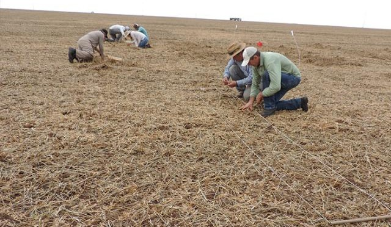
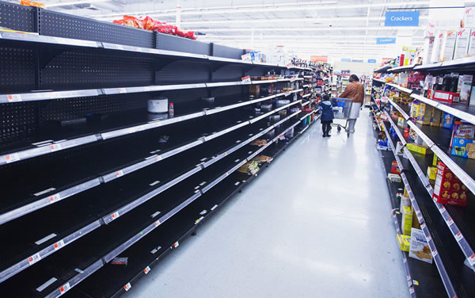
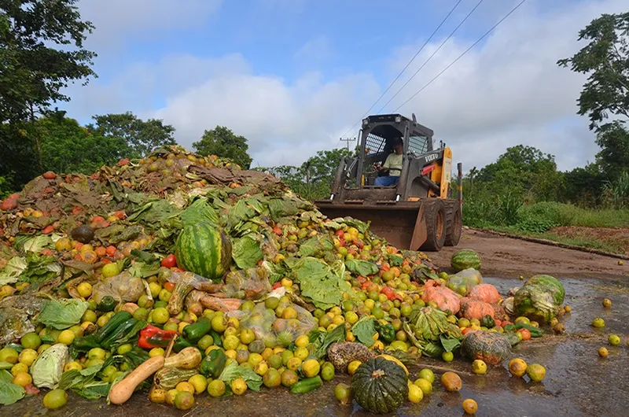
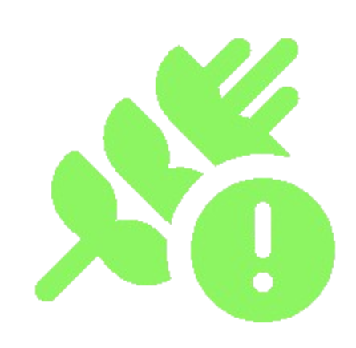
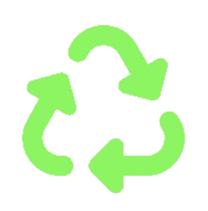

O Desafio Urgente do Desperdício de Alimentos no Brasil
Descubra o impacto e as formas de combater a perda de alimentos em nosso país, onde quase 30% da produção é desperdiçada. Nosso portal fornece dados e soluções baseadas em referências nacionais.
Mude Seus HábitosPrincipais Causas do Desperdício

1. Perdas na Colheita e Transporte
O Brasil perde cerca de 10 milhões de toneladas anualmente nesta fase devido ao manuseio inadequado, logística deficiente e descarte de itens que não se enquadram em padrões estéticos.

2. Falhas no Varejo e Distribuição
Nos pontos de venda, grandes volumes de alimentos frescos são descartados por motivos como excesso de estoque, danos na armazenagem e falta de giro adequado (regra FIFO).

3. Desperdício no Consumo Final
O maior volume de perdas evitáveis acontece na casa do consumidor, chegando a 30% do total no país, por conta de compras não planejadas e armazenamento incorreto.
Estatística Central: O Brasil perde cerca de 27 milhões de toneladas de alimentos por ano. Esta quantidade é suficiente para alimentar o país por meses.
Fonte: WRI Brasil (Informação Oficial) | Fonte: Embrapa (Informação Oficial)O Duplo Impacto: Social e Ambiental
1. Crise de Insegurança Alimentar
Os alimentos descartados poderiam alimentar mais de 13 milhões de brasileiros em situação de fome extrema. O desperdício é um espelho cruel da desigualdade social.
2. Emissões e Mudanças Climáticas
Quando o lixo orgânico vai para aterros, ele gera gás metano (CH4), um gás de efeito estufa 25 vezes mais potente que o CO2. Ao combater o desperdício, combatemos o aquecimento global.
Seja a Solução: Ações Práticas
Planejamento Semanal
Faça uma lista e organize a geladeira. Use a regra Primeiro que Vence, Primeiro que Sai (PVPS).
Culinária de Aproveitamento
Utilize cascas, talos e sementes integralmente nas receitas. Sobras viram o almoço do dia seguinte.

Apoie Bancos de Alimentos
A Lei 14.016/2020 protege o doador de alimentos. Apoie a doação de excedentes em bom estado.

Compostagem
Transforme resíduos orgânicos inevitáveis em adubo, reduzindo drasticamente o lixo nos aterros.
Políticas Públicas e Legislação
O combate ao desperdício é reforçado por leis como a Lei 14.016/2020 (incentivo à doação de alimentos) e pela Agenda 2030 da ONU (ODS 12.3). É fundamental que empresas e cidadãos conheçam e cumpram estas diretrizes.
Notícias e Casos de Sucesso
Projetos de bancos de alimentos e a startup "Comida Invisível" são exemplos de iniciativas brasileiras que estão transformando a forma como lidamos com os excedentes. Mantenha-se atualizado sobre o tema.
Fatos e Curiosidades
Você sabia que a maior parte da água utilizada na agricultura (cerca de 70% da água doce do planeta) é desperdiçada quando o alimento vai para o lixo? Combater o desperdício é também combater a escassez de água.